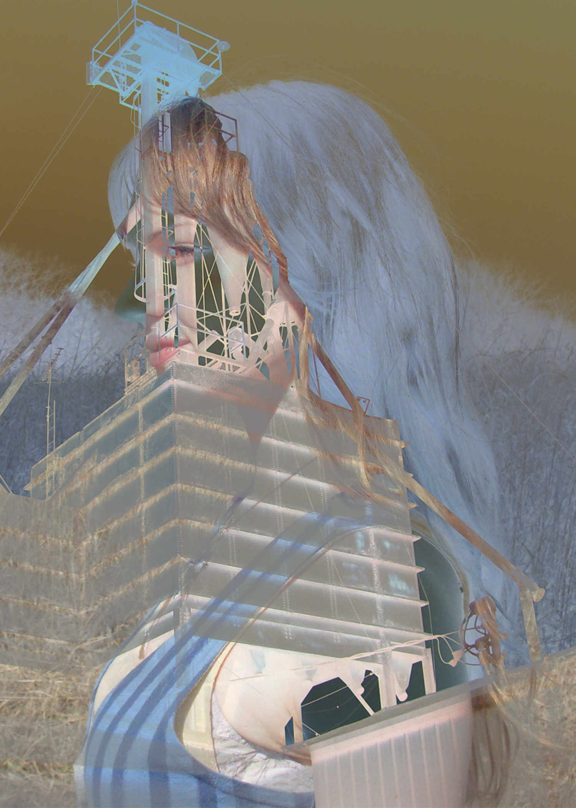

Welcome to my porfolio
Hello, My name is Evie. I want to share my art, my preservation, and my curation with you. Through these mediums, I hope to emphasize my passion for the past, everyday magic, and limitless whimsy. There is beauty in the forgotten, and what’s been forgotten can often be brought back to life. When I create, I aim to elicit feeling. While I have explored the visual motifs of nostalgia, the elusive and visceral feeling of nostalgia is what truly inspires me: It drives me to be an artist, an archivist, and an advocate.

View a Recent Project
Click Here"The Analytical Engine weaves algebraic patterns, just as the Jacquard loom weaves flowers and leaves." ― Ada Lovelace